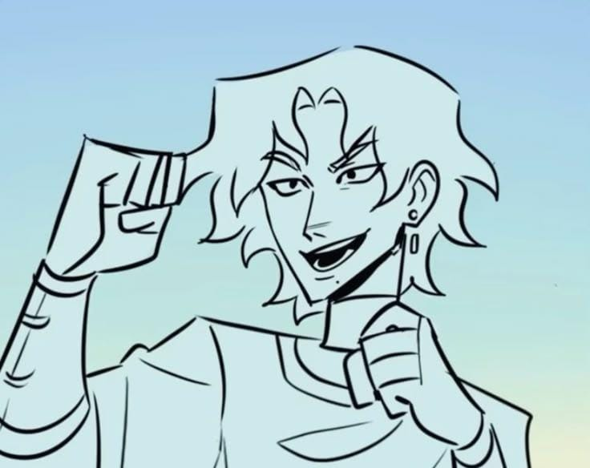

Telêmaco é o filho de Odisseu e Penélope. Quando seu pai parte para a Guerra de Troia ele ainda é apenas um bebê, e cresce sem conhecer o pai. Ao longo da história ele precisa amadurecer rapidamente e assumir responsabilidades dentro do reino.
Com o tempo, Telêmaco começa a procurar respostas sobre o destino de Odisseu. Sua jornada representa crescimento, coragem e a busca por identidade enquanto ele tenta provar que também pode ser um herói.